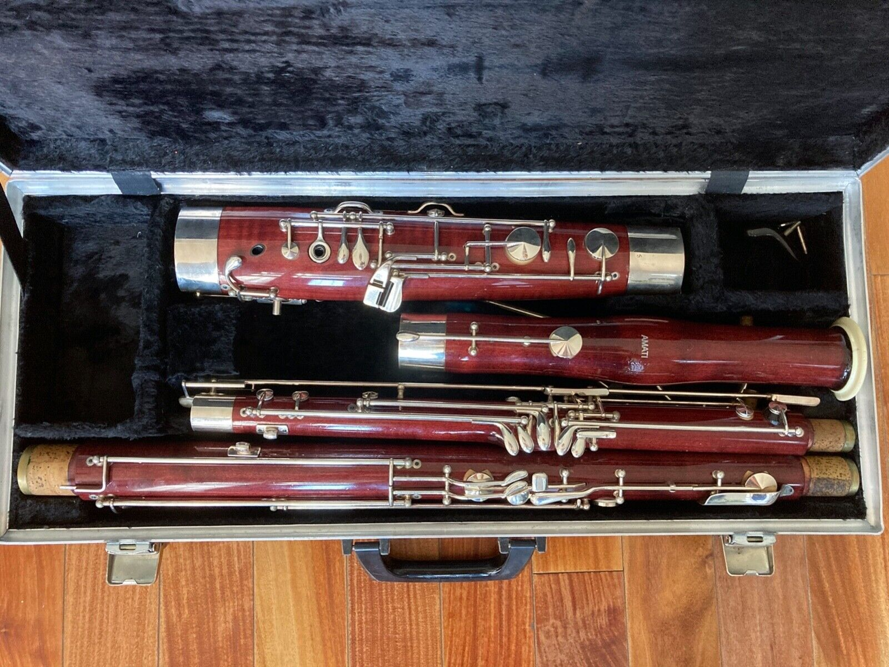
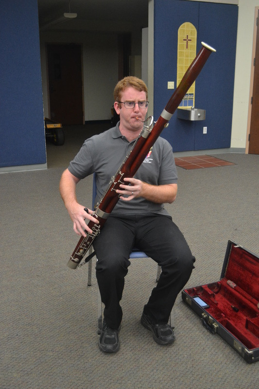
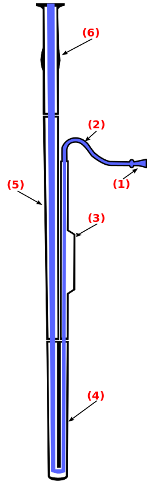

The Bassoon
Overview
The bassoon is a musical instrument in the woodwind family, often playing in the tenor and bass ranges. It is composed of six pieces, including the bocal and reed. Music for the bassoon is usually written in bass and tenor clef. Rarely, this can also extend to the alto and treble clefs. There are two forms of modern bassoons: the Buffet (French) and Heckel (German) systems. Bassoons are primarily made of hard maple or plastic composite materials. Reeds are made from a variety of cane known as arundo donax. Bassoons are known for their unique sound and versatility. They are excellent for both expressive solos and punchy rhythmic lines.
This website will explain some information about the basic features of the bassoon:
- Setting Up Your Bassoon
- Caring for Your Bassoon
- Reeds
- Tips
Setting Up Your Bassoon
The bassoon has six parts: the boot joint, wing joint, bass joint, bell, bocal, and reed. To protect the instrument and to transport it, the parts are separated and put into an instrument case.
To set it up, take the boot joint (the fattest joint) and place the wing joint (the long, thinner one) into the smaller hole in the flat part of teh boot joint. The bass joint is similar to the wing joint, but thicker. This goes in the larger hole of the boot joint. The bell slides on top of the bass joint. The bocal's cork slides into the hole in the wing joint. When inserting it, make sure you are not pressing the whisper key down. This controls the pad that covers the only tone hole in the bocal. Pressing it down while inserting the bocal can remove the pad, which would have to be replaced. The reed has to be soaked in water for 2-5 minutes. After it is soaked, it can be slid onto the end of the bocal. And you're done!
The bassoon can be played in a chair or standing. When sitting in a chair, bassoonists use either a seat strap, neck strap, or both. Standing bassoonists use neck straps or harnesses.
Cleaning
Cleaning your wind instrument is vital to get rid of spit and prevent mold from growing (this is more of a concern with wooden bassoons than plastic ones, but it is still important to clean it!). The bassoon has six parts, but only two need to be cleaned: the boot joint and the wing joint. This is because air travels through the bassoon like this:
Spit pools at the bottom, so cleaning the bass joint and bell is not necessary. To clean the joints, you need a cleaning rag. This usually comes in the case but can also be bought online or in a local music store. For the wing joint, you drop the string through the hole and grab it where it comes out the other side. Pull the string to pull the rag through. Do this twice. For the boot joint, drop the string into one of the holes, then shake the joint until the string falls down the other hole. Grab the string and pull the rag through. Make sure not to leave the cleaning rags inside the joints!
Reeds
The bassoon is a double reed instrument. This means that sound is produced by two reads slapping against each other. Double reeds are delicate and expensive, so be careful with them. Always put them back into a reed case after use.